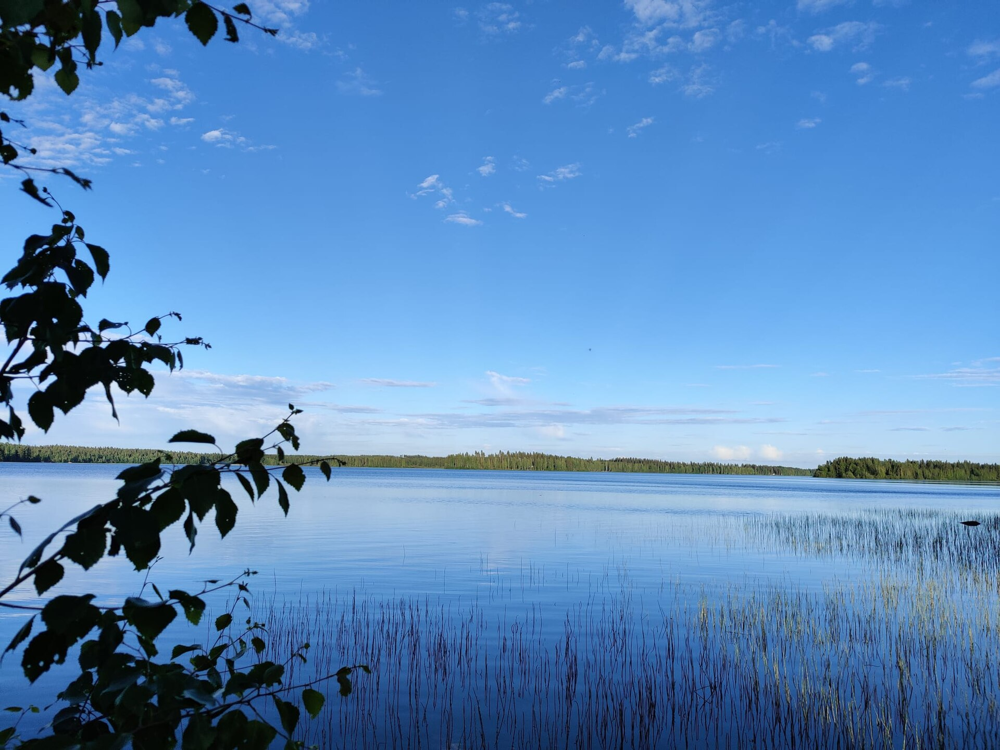

Keitä me olemme?
Hei! Olen Ville Ylinen, Kuivasjärven Rantasaunojen omistaja. Me sijaitsemme upeissa maisemissa Kuivasjärven rannalla Seinäjoella. Tarjoamme vuokralle iltakäyttöön kolmea perinteistä saunaa: savusaunaa, puulämmitteistä rantasaunaa sekä kodikasta pientä mökkisaunaa.
Ajatuksena on tarjota jokaiselle saunojalle mahdollisuus rauhoittua arjen kiireiltä hyvien löylyjen ja kauniin järvimaiseman äärellä.

Saavutettavuus ja helppous
Haluamme, että sivustomme ja palvelumme ovat kaikille avoimia ja helppokäyttöisiä. Koska veljeni on värisokea eikä erota perinteisiä vihreitä ja punaisia kalentereita toisistaan, olemme suunnitelleet aikataulut ja vapaiden iltojen esityksen niin, että väreihin ei tarvitse turvata – tiedot ovat aina selkeästi luettavissa tekstinä.
Myöskään varauksen teko ei voisi olla vaivattomampaa: valitset vain haluamasi saunaliittymän ja iltapäivän, lähetät varauspyynnön lomakkeella, ja me vahvistamme varauksen puhelimitse!